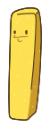
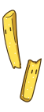
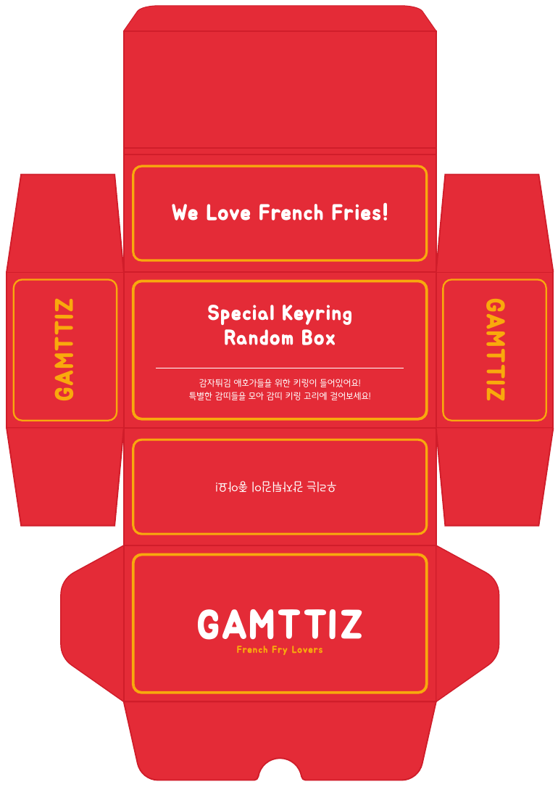
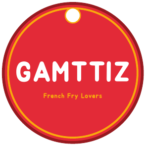
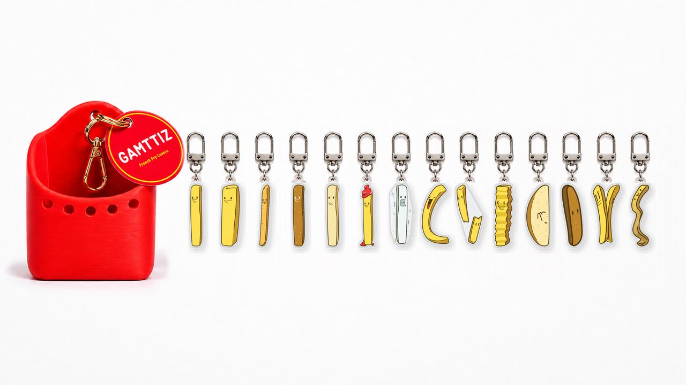
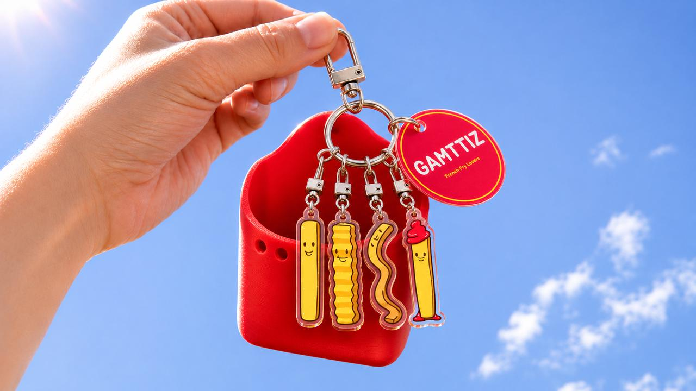

관찰에서 캐릭터로
굵기, 휘어짐, 튀겨진 정도, 시즈닝처럼 실제 감자튀김에서 발견할 수 있는 특징에 작은 표정과 개성을 부여합니다.
GAMTTIZ / PROJECT INFO
작은 감자튀김,
저마다의 매력.
감자튀김을 좋아하는 마음에서 시작된 14가지 캐릭터. 일러스트에서 아크릴 키링, 패키지와 감띠즈 홀더까지 이어지는 캐릭터 디자인 프로젝트입니다.
프로젝트 이야기 살펴보기 ↓


01 / THE ORIGIN
반듯한 것부터 휘어진 것까지, 감자튀김의 서로 다른 생김새는 익숙하지만 쉽게 지나치는 작은 디테일입니다.
모양이 다르다는 건
틀린 것이 아니라
다른 매력이라는 것.
굵기, 휘어짐, 튀겨진 정도, 시즈닝처럼 실제 감자튀김에서 발견할 수 있는 특징에 작은 표정과 개성을 부여합니다.
감튀 애호가에게는 익숙한 디테일을 발견하는 재미를, 처음 만나는 사람에게는 새로운 시선을 전하고자 합니다.
캐릭터를 키링과 홀더로 연결해 좋아하는 마음을 가방과 열쇠에 달고 다닐 수 있도록 설계했습니다.
02 / CHARACTER LANGUAGE
감띠즈의 디자인은 형태, 표면, 관계라는 세 가지 관찰의 기준에서 읽을 수 있습니다.
곧게 뻗거나 휘어진 실루엣만으로도 감띠의 개성이 달라집니다.

튀겨진 색, 시즈닝과 케찹은 각 캐릭터의 특징을 드러냅니다.

둘이 붙어 있거나 함께 다니는 모습으로 친구들의 이야기를 표현합니다.
03 / CHARACTER ARCHIVE
서로 다른 생김새와 표정의 원본 캐릭터를 만나보세요. 한 명씩 눌러 특징을 확인할 수 있어요.
04 / VISUAL IDENTITY
익숙한 감자튀김의 빨강과 노랑, 부드러운 크림색. 간결하고 장난기 있는 글자의 형태로 하나의 브랜드 이미지를 연결했습니다.
영문: 감띠즈 전용 글꼴
한글: Wanted Sans Variable
색상을 눌러 HEX 코드를 복사할 수 있어요.
05 / DESIGN EXPERIENCE
감띠즈는 캐릭터를 보는 것에서 끝나지 않습니다. 발견하고, 고르고, 모으고, 함께 다니는 경험으로 확장됩니다.
06 / PACKAGING DESIGN
빨간 랜덤박스의 로고, 네임텍과 스티커까지 감띠즈의 시각 언어를 하나의 패키지 경험으로 연결했습니다.




07 / SIZE & PRODUCTION
캐릭터 일러스트와 포장 박스, 네임텍의 디자인 규격입니다. 실제 제작 과정에서 세부 치수는 달라질 수 있습니다.
* 모든 치수는 기존 디자인 기준의 약식 표기입니다.
08 / IN YOUR EVERYDAY
홀더와 키링을 다양한 일상 속에서 연출한 목업 사진입니다.



09 / PROJECT CREDITS
감자튀김에서 발견한 작은 개성을 브랜드의 세계로 확장하는 개인 캐릭터 디자인 프로젝트입니다.
COLLABORATION & INVESTMENT
감자튀김을 좋아하는 마음에서 시작된 캐릭터 프로젝트입니다. 브랜드·제품 협업, 전시, 투자 및 굿즈 관련 제안을 환영합니다.